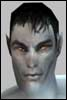

| Author | Thread |
Windguaerd
AOU Founder (Retired)
 | Mercury Dragons Clan lookin for more Roleplayers We're looking for lvl 50 or higher roleplayers who are able or would be willing to roleplay military roles. We're very active roleplayers, we have 3 Platoons (Delta for lvl 50-75 and Alpha for lvl 75-120, Dragon's Watch lvl 120+) and a very active Command Staff (lvl 100+), all Mercury Dragons are always willing to help the lower level members to improve and grow.
Only serious gamers/roleplayers should apply, it is hard for casual players to be in the clan, due to events/meetings and the happenings (events) in the clan which are mostly planned and partly improvised or dropped on our laps by our friends, allies and sometimes our enemies.
This is a strictly military clan, it requires maturity and responsablility even at the rank of Private. You may be called at any time to perform a mission/operation or assist a Mercury Dragon or a clan/neutral citizen in need of assistance.
Been Active since Sept 2000, making it 10 months this June. The organization is made 100% of roleplayers or people who want to get into roleplaying.
We are one of the oldest clans around, and among the most respected due to the fact we take our position seriously (our clan is run by roleplayers, and it is required you be a roleplayer to join).
We have our own Timeline=> Mercury Dragons Clan Timeline
A vast library of in-game knowledge, a dedicated Screenshot Archives of MD Adventures and Clan Bulletins.
Private Forums divided into two types, one set for ALL MDs, and another for Officers (They access normal and Command Staff forums).
Solid Bylaws to encourage roleplaying and the military role we uphold.
Mercury Dragons are extremely loyal to the clan and to eachother.
To apply, please visit http://mercury-dragons.org and read the FAQ, Charter and Bylaws sections before sending an application, it is required.
Visit our grid site: Mercury Dragons Clan and see what you can do for the clans!
Thank you. Last edited by Windguaerd on September 13th, 2002 at 15:18 |
Perinea
Leet | The Mercury Dragons Since joining the Dragons I have quickly grown stronger while at the same time managing to attend events that happen with in the org.
The people that were there before me were quick to accept me into their group - and tried their utmost to help me with equipment, mission partners and roleplay.
I have been in several clans/guilds in my time playing online games - and I have to say - the Mercury Dragons are the best I have been in so far.
Send me a tell in game if you want to speak to me about the Dragons, I will be as helpful as I possibly can.
Pvt. Perinea
Lvl 75 Soldier. |
RickDeckard
Leet
 | Mercury Dragons As a frequent player, I should say that being a member of the Mercury Dragons has enriched my life a great deal on Rubi-Ka. My fellow dragons have become my "family" of sorts ...
While I pride myself on being self-sufficient, my guildmates are always available for chat, and almost always available for teaming. When we find a prized item that we know one of our guildmates can use, we give it freely. We also take time out to help fellow clanners--even strangers--unless circumstances prevent.
Though I'm only lvl 83 (currently), there are *extremely* high level members of the guild who treat me with respect. Respect, excellence, and dignity are the paramount qualities we find in other guildmates, and look for in recruits. If you have these qualities, the Mercury Dragons may be a good family for you as well. |
Windguaerd
AOU Founder (Retired)
| New MD Clan Movie! Last edited by Windguaerd on September 13th, 2002 at 15:13 |
Kzak
Supa Leet
 |  Mercury Dragons Mercury DragonsI, too, play Anarchy Online frequently, and since joining the Mercury Dragons in early April, I have gotten to know the MD people well. Good people. They have become more than just friends, almost like family members, helping each other out with equipment, advice, planning and assistance.
Items that other MDs can use are given freely, no matter what QL they are.
The Mercury Dragons is an active and stable clan unlike others I have been part of in the past, holding military operations and is visible in the news - presently with the Old Athen Restoration Project, which I personally believe strongly in.
If you want to talk about the Dragons, feel free to meet up with me in-game or send a /tell. Last edited by Kzak on June 27th, 2002 at 08:33 |
TemplarRed
Supa Leet
 |  A DRAGON OF ONE A DRAGON OF ONEThere are a great deal of serious, long-term gamers in this outfit. And believe me, many of us wouldn't be sticking around if Mercury Dragons wasn't THE place to be. We wouldn't bother wasting our time.
But this IS the place to be. And we'll be here to see our duties carried out!
Enlistee screening is going on RIGHT NOW, & there are a limited number of vacancies to be filled on each platoon. So if you think you've got what it takes... then what are you waiting for? Check us out! |
TwinFooTwo
Soleet
 | I joined the Mercury Dragons last year.
I've gained almost 100 lvls in this clan, due to friendship, strenght and courage.
Social events, military operations, special missions, clan meetings, everyday updated news, forums for chat/information/trading/dedication.
It is all good. It is freedom. It is CLAN.
Join the Mercury Dragons : http://www.mercury-dragons.org
General TwinFooTwo
Mercury Dragons |
Kanatach
Phear Leet
 | Warriors! Unite! Joined the Mercury Dragons only this week. I've known a lot of people on Rubi-Ka, bu these guys are a different breed. Honest, helpful, hard-working to further the clan cause.
I know I found a home....now, will you do so too? |
Regidoc
Secret Nerf Table Dancer | I've been a member of a few weeks now and I love being one. the planned events and helpful staff can make this game more fun than it already is. Clan is family and family share and that is exactly what the Mercury Dragons do; share with each other. Join up if you enjoy making new friends and having fun while at the same time keeping a serious tone to the game. |
Hrathgaard
Leetas
 | A true RP guild...sounds great!
One thing bothers me though...I have to own a yalm??? If it is soo...I'll contact you in 6 months 
If there is a way around the Yalm req...well...I'm interested.
/me runs off to find some sponsors. |
Regidoc
Secret Nerf Table Dancer | =) Heh a yalm is not a necessity...just an added bonus. There are many in the clan that do not have access to a yalm yet, but we try to help those that do not |
Tarencloud
Leet | I have been with the Mercury Dragons since early April of this year.
I cannot say much more that would reinforce what has already been posted here.
If you have a love or interest for role-playing then this is the place to be. Were all a part of this organization because each of us feel strongly about the RPG aspects AO has to offer.
Were here to assist in role-playing skills as well.
I cannot say enough about this organization, I have played on multi-pul worlds in a RPG setting and never have I expeienced what I have being a member of the Mercury Dragons.
The recruitment Drive is still on, if you enjoy role-playing or are interested in expanding your role-playing skills amd think you have what it takes to be a part of a Militant organization for the greater good of the clans, then fill out that application and send it in!! |
Brad, STL/MO
Phear Leet
 | CoA In character: In light of your statements and actions over the last couple of weeks, Mr. Kerans, wouldn't it be more appropriate to change your recruiting slogan to: "Mercury Dragons: Join or Die"? Or maybe, "Mercury Dragons: My Struggle"? Nah, that one's been used. "Mercury Dragons: Our Way or the Highway"? Nah, not harsh enough, not for someone who's threatening not just violence against other clan leaders but violence made worse by paying a certain notorious figure to delete insurance records first.
By all means, everybody, join the Mercury Dragons. If Windguaerd wins his little beer-hall putsch, it will certainly be safer than not being a member of the Mercury Dragons, won't it?
Out of character: Which is to say, if you're considering joining the Mercury Dragons, you should remember that this is a clan that has declared war on the Council of Truth, and that if you do so, you are joining a group whose leader has threatened to use violence including permanent death to other player characters if that was what it took to displace the Council.
In short, yes, I am asking people not to join the Mercury Dragons. Last edited by Brad, STL/MO on August 3rd, 2002 at 04:45 |
Keaorata
Phear Leet
 | I think now would be a good time to quote a great friend of mine:
quote:
There is something tragically romantic about misunderstood heroes that appeals to me. It's always been a popular theme in much of ancient earth fiction: The noble outlaws who are feared, hated, & misunderstood by the people for whom they would die to protect. - Madhava Kuiper
I personally hate to see the person i have most respect for on Rubi Ka slated like that. However, i wont lower myself to retort.
Just read the above quote and see if you understand who Commander Windguaerd really is.
He certainly isnt what you see him as Brad. Think again please. Last edited by Keaorata on August 4th, 2002 at 09:31 |
cellestron
Soleet | Re: CoA quote:
Originally posted by Brad, STL/MO
Out of character: Which is to say, if you're considering joining the Mercury Dragons, you should remember that this is a clan that has declared war on the Council of Truth, and that if you do so, you are joining a group whose leader has threatened to use violence including permanent death to other player characters if that was what it took to displace the Council.
In short, yes, I am asking people not to join the Mercury Dragons. [/B]
You're kidding right? I was a member of the MD for several months and since I left a few days ago over this very issue I think I can speak on it.
It's true that WG was willing to use violence to overthrow the CoT, and I left because of this. RPwise, I cannot support a civil war and it made sense for me to go.
But "permanent death"?? hahahaha You have "got" to be kidding me. You think FC is going to stand for a player going around permanently killing people????
Look at me.....I left the guild in protest over this.
*looks around*
I don't "feel" dead. 
If he is willing to go to such lengths over this, you think he would let one of his own, who openly posted in defiance of these actions on the MD forums, just leave????
I urge anyone who is interested to join the guild, just keep in mind what you may be asked to do. They really are great people.  |
Windguaerd
AOU Founder (Retired)
| Attention applicants! BOOT CAMP! From Captain Kanatach:
Date: Friday, 13th september
Time: 1900 GMT
Place: Old Athen, outside Apartment Complex 1 (NW section of town, against main city wall near the water.)
Duration: 30 - 60 minutes
Drill Instructor: Captain Kanatach
All applicants are to attend Boot Camp. This is the ONLY way you will EVER become a full member of the Mercury Dragons!!!
Boot Camp will be held later for those who are unable to attend now. But tardiness in attending Boot Camp will be noted...
(OOC)Time is set using the help of this site http://greenwichmeantime.com/ so check it out there and be on time so you dont miss it.(/OOC)
Captain Kanatach
Drill Instructor
====================================
Anyone who is an Applicant (sent and application and passed the interview), a Prospect (sent application), or someone interested in joining MD or just want to have fun PLEASE feel free to join this event (lvl 50 required). |
Windguaerd
AOU Founder (Retired)
| Amendment to MD Bylaws... For those who are considering to join our clan, please re-read Page 1 of our Bylaws due to changes to the Recruitment process. |
NWvoicesStink!
Leetas
 | Me Me Me! Arggers!!! website is down! :O
(silent bump) |
Windguaerd
AOU Founder (Retired)
| Hmm... Had our Fixer check the MD Grid Site, and all appears to work in order from our side. |
NWvoicesStink!
Leetas
|  . . . nevermind i troubleshooted it :D . . . nevermind i troubleshooted it :DLast edited by NWvoicesStink! on October 6th, 2002 at 21:06 |
All times are GMT.


 Anarchy Online Bulletin Board > Community > Rubi-Ka 1 Organizations > Mercury Dragons Opens Recruitment Drive [RPG Org]
Anarchy Online Bulletin Board > Community > Rubi-Ka 1 Organizations > Mercury Dragons Opens Recruitment Drive [RPG Org] Last Thread Next Thread
Last Thread Next Thread 
 June 21st, 2002 23:29
June 21st, 2002 23:29